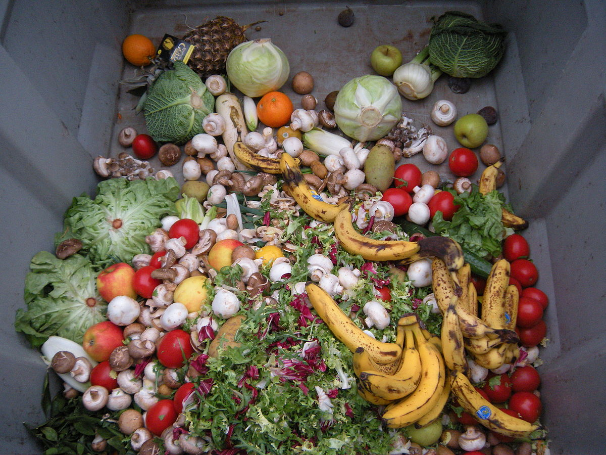
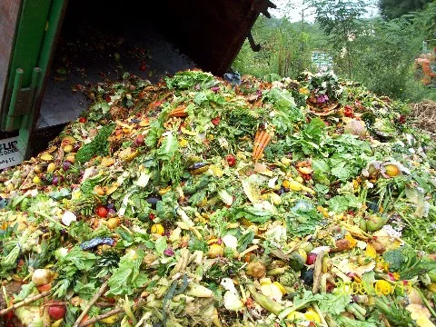
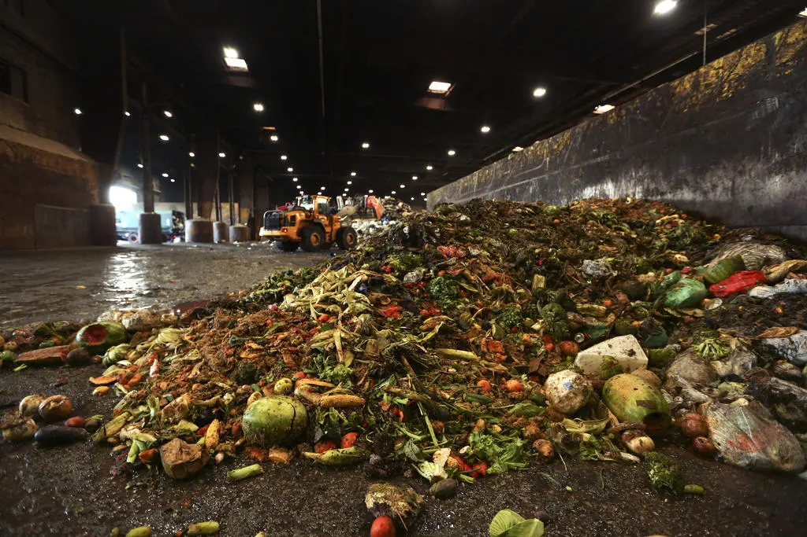
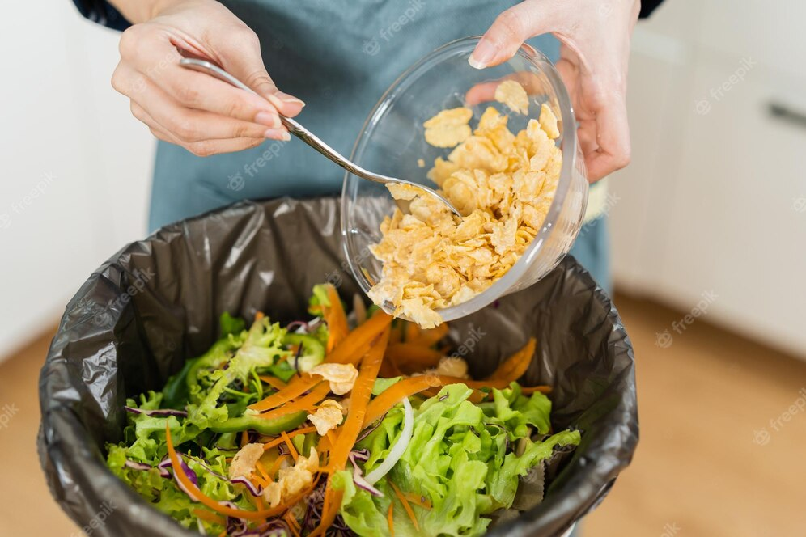

Fruit waste
Fruit waste is a major contributor to global food waste, with a significant amount being
discarded due to overproduction, spoilage, or cosmetic imperfections. This waste has
economic, social, and environmental impacts, as it wastes valuable resources and contributes
to greenhouse gas emissions. Reducing fruit waste can be achieved by buying only what is
needed, using fruit before it spoils, and donating excess fruit to food banks or composting
it. By reducing fruit waste, we can conserve resources, alleviate hunger, and mitigate the
environmental impacts of food waste.

Vegetable waste
Vegetable waste refers to the discarded parts of vegetables, such as peels, stems, and
leaves, that are often thrown away. This waste can contribute to greenhouse gas emissions
and waste valuable resources. Reducing vegetable waste can be achieved through practices
such as meal planning, using vegetable scraps for stock or broth, and composting. By
reducing vegetable waste, we can help create a more sustainable and efficient food system.

Overproduction waste
Overproduction food waste occurs when more food is produced than is needed or consumed. This
type of food waste can occur at any stage of the food supply chain, from farming to retail.
Overproduction food waste has significant economic and environmental impacts, wasting
resources and contributing to greenhouse gas emissions. Reducing overproduction food waste
can be achieved through better planning and forecasting, improving supply chain efficiency,
and donating excess food to food banks or other organizations.

Kitchen waste
Kitchen waste is a significant problem in households worldwide. With growing population,
food waste has increased in recent years, causing environmental, social, and economic
concerns. Every day, households produce a large amount of kitchen waste, including food
scraps, spoiled food, and cooking oils. Most of this waste ends up in landfills, where it
decomposes and produces methane, a potent greenhouse gas that contributes to climate change.
Therefore, it is crucial to manage kitchen waste effectively and reduce the amount that ends
up in landfills.